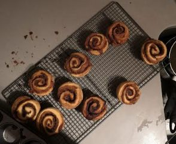

Quick Cinnamon Buns

Before you start heat the oven to 180°C fan.
Ingredients
Filling
Method
- Heat the oven to 180°C fan. Butter a 12-cup deep muffin tray.
- First prepare the filling. Melt the 75g unsalted butter and leave in a warm place so that it remains liquid. Mix together the 250g light brown sugar and 1 tbsp ground cinnamon until no lumps remain, then set aside.
- Now make the dough. In the bowl of an electric mixer, combine all the dry ingredients with the cubes of 240g unsalted butter and mix until you have a coarse meal. Slowly pour in the 300g cold milk while the mixture is running, until the dough forms into a ball and comes away from the bowl.
- Turn the dough out onto a lightly floured surface and leave to rest for a few minutes. Fold the dough gently over itself once or twice to pull it all together. Let the dough rest a second time, for 10 minutes.
- Clear a large surface, dust lightly with more flour and roll out the dough into a large rectangle until about 5mm thick. Brush the surface of the dough with the melted butter and, before the butter hardens, sprinkle the cinnamon sugar on to the butter. You want a good, slightly thick layer.
- Now roll the dough up, starting at the long side, keeping it neat and tight. Gently tug the dough towards you to get a taut roll whilst rolling away from you into a spiral. Once it's all rolled up, gently squeeze the roll to ensure it's the same thickness throughout.
- Use a sharp knife to cut the roll crossways into 12 even slices. Take a slice of the cinnamon roll, peel back about 5cm of the loose end of the pastry and fold it back under the roll to loosely cover the bottom of the roll. Place in the muffin tray, flap-side down. Repeat with the remaining slices.
- Bake the buns for 25 minutes. As soon as they're out of the oven, flip them over on to a wire cooling rack, so that they don't stick to the tray. Dip each cinnamon bun into a bowl of caster sugar and serve straight away.